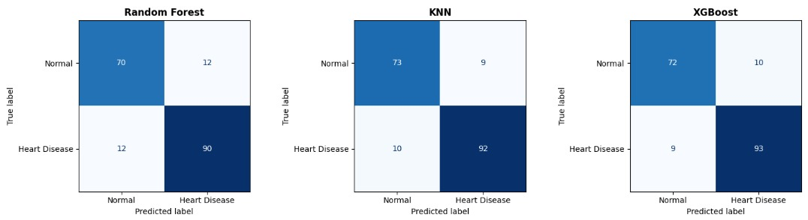

Heart Disease Prediction
A machine learning project to predict heart disease risk using patient clinical features.

📌 Project Overview
Heart disease remains an important public health issue. Based on Indonesia’s Basic Health Research (Riskesdas) 2018, heart disease cases reached 1.5%, showing a threefold increase over the previous five years. The prevalence also increases with age, reaching 0.8% among people aged 25–34, 1.3% among those aged 35–44, and 2.4% among those aged 45–54.
This project uses 918 patient records to predict heart disease based on key medical indicators such as ECG results, maximum heart rate, chest pain type, exercise-induced angina, oldpeak, and ST slope. The goal is to support early risk screening through a data-driven machine learning approach.
🎯 Project Objectives
- Build a binary classification model for heart disease prediction.
- Compare XGBoost, Random Forest, and KNN.
- Evaluate performance using Accuracy, Precision, Recall, F1-Score, Confusion Matrix, and ROC-AUC.
🧾 EDA and Analysis
The EDA explores data quality, target distribution, clinical symptom patterns, ECG behavior, and early risk signals related to heart disease.
🛠 Tools & Technologies
📈 Results & Insights
After hyperparameter tuning and final testing, all three models achieved strong performance. XGBoost produced the best overall result, especially with the highest recall, which is important for reducing missed heart disease cases.

| Model | Test Accuracy | Test Precision | Test Recall | Test F1-Score | Test ROC-AUC |
|---|---|---|---|---|---|
| Random Forest | 0.869565 | 0.882353 | 0.882353 | 0.882353 | 0.930297 |
| KNN | 0.896739 | 0.910891 | 0.901961 | 0.906404 | 0.944165 |
| XGBoost | 0.896739 | 0.902913 | 0.911765 | 0.907317 | 0.934840 |
Key Insight: XGBoost achieved the highest recall at 0.911765, making it the strongest model for identifying heart disease patients. In this medical screening case, recall is prioritized because missing a heart disease case can be more critical than a false alarm.
View Code Documentation on GitHub